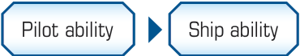
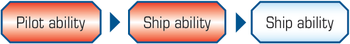
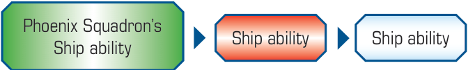
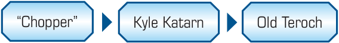

EXTENDED EXAMPLES
Ability Queue Example #1
Jake Farrell (A-wing) has the pilot ability “After you perform a or action, you may choose a friendly ship at range 0–1. That ship may perform a action.” He also has the ship ability “After you perform an action, you may perform a red action.”
Jake Farrell activates and performs a action. At this point, both his ship and pilot ability trigger. He chooses the order to add them to the ability queue, adding his pilot ability first, then his ship ability.

While resolving his pilot ability, he can choose a friendly ship at range 0–1. He chooses himself, and then performs a action. This triggers his ship ability again. Now he adds the second instance of his ship ability in front of the first instance of his ship ability.
While he resolves his ship ability, he performs a red action. This triggers his pilot ability and his ship ability again. He chooses to add his pilot ability first, then his ship ability.

While resolving his pilot ability again, he chooses a friendly Phoenix Squadron Pilot (A-wing) at range 1. The other A-wing performs a focus action and its ship ability triggers. This is added to the front of the ability queue.

Phoenix Squadron Pilot resolves its ship ability and performs a red action. The only abilities remaining in the ability queue are two instances of Jake Farrell’s ship ability. Since he is stressed, he cannot perform an action so neither ability has an effect and the ability queue empties.
Ability Queue Example #2
Rachel, the Rebel player, is flying “Chopper” (VCX-100) and a Kyle Katarn (HWK-290). Sam, the Scum player, is flying Old Teroch (Fang Fighter) equipped with Static Discharge Vanes.
At the start of the Engagement Phase, “Chopper,” Kyle Katarn, and Old Teroch have abilities that trigger. “Chopper’s” ability is “At the start of the Engagement Phase, each enemy ship at range 0 gains 2 jam tokens.” Since Rachel is the first player, she will resolve “Chopper’s” ability first.

Rachel uses “Chopper’s” ability, and Old Teroch gains two jam tokens. Static Discharge Vanes’ ability is “If you would gain an ion or jam token, if you are not stressed, you may choose a ship at range 0–1 and gain 1 stress token. If you do, the chosen ship gains that ion or jam token instead, then you suffer 1 damage.” Since this is a replacement effect, it happens immediately. Sam chooses for Old Teroch to gain one stress token and transfers one of the jam tokens to Kyle.
Since Kyle had two focus tokens, the jam token removes one of them. Rachel chooses to use Kyle’s ability to transfer his remaining focus token to “Chopper.”
Old Teroch’s ability is “At the start of the Engagement Phase, you may choose 1 enemy ship at range 1. If you do and you are in its , it removes all of its green tokens.” Although Old Teroch is in the of both enemy ships, “Chopper” is at range 0 and Kyle does not have any green tokens. His ability has no effect.